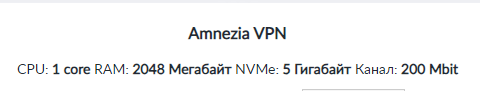
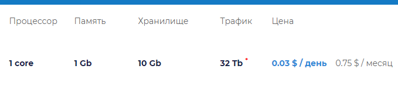
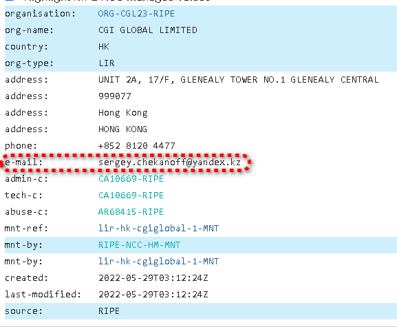
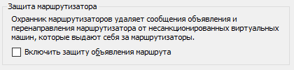

Хочу настроить свой vps. Какие сейчас можно использовать сервисы, принимающие оплату российскими банками и не требующие персональных данных?
А какие персональные данные они обычно тебуют? Фото паспорта?
Я вот пробовал взять на sale-dedic.com, у друга там стоит свой, он никаких данных не вводил, все норм, а у меня уже после оплаты пришло сообщение мол наша система не смогла проверить данные, пришлите фото паспорта и свою рожу рядом.
VPS нужен для обхода блокировок или для других целей? Вот они пишут:
Вся инфраструктура Sale-Dedic размещена в одном из лучших дата-центров России «Даталайн».
Если сервера находятся в России через них можно вообще обход блокировок организовать?
Ну так непосредственно vps сервер покупаешь зарубежный.
У меня вот тут Cloud VPS server rental. Buy virtual cloud hosting VPS | Zomro 2 сервака. Ничего не вводил, кроме почты и телефона. Регион Нидерланды, оплата картой. Юрисдикция вроде Великобритания.
VDSina.com имеет вроде как ОАЭ юрисдикцию, но сами сервера в Амстердаме. Не просили у меня паспорта, оплата есть картой, правда там комиссия сторонним сервисом будет, но все таки имеется
Так битками плати, а левые данные можно купить в даркнете. Нашел проблему…
Российской картой?
С Vdsina ситуация такая…
“Компания ООО «Хостинг-технологии» работает в соответствии с законодательством РФ.”
При этом
-
от компании приходило письмо “эти дегенераты (роскомнадзор) ломают интернет” (цитата)
-
Сразу на сайте предлагаются автоматические шаблоны по установке средств обхода блокировок (Outline 3x-ui)
-
Домен зарегистрирован в Роcсии \российским регистратором
У меня лично возникает впечатление, что это honey pot если вы понимаете,о чем я говорю=)
Потому что видя все это безобразие и если бы я это не контролировал, я бы на ИХ месте уже разделигировал домены, закрыл компанию в РФ и[заодно закрыл бы сотрудников кто еще в России работают).
Когда в их телеграме задали им эти невинные уточняющие ситуацию вопросы - админ забанил)
Очень стремная компания как по мне.
Да, но есть небольшая комиссия.
Сижу на AEZA, в целом всем устраивает
JustHost
Сеть перегружена там почти на всех локациях, даже с LG если пинговать то там пинг скачет
Есть vdsina.ru и vdsina.com , вторая имеет юрлицо в дубае. Мы сейчас конкретно по РУ говорим (что они honey pot) или про обе?
Просто хостер появился в свете в 2014 году, не думаю в те годы они уже задумались сливать данные. И тогда бы не переезжали в дубай - это дорого и не стоит того, чтобы “заслужить доверие клиентов и подсадить их на крючок” - выгода недотягивает до затрат, буквально один кейс разрушит годами заработанную репутацию. Может я не прав, просто выглядит как компания норм
Сидел на vdsina.ru какое-то время назад, они комиссии ввели, платишь проценты за процессинг и ещё им с какого-то хера. В итоге, сумма получается почти х2 от той что на сайте. По тех.части ничего плохого сказать не могу, сервер был в Нидерландах. Из плюсов, есть возможность установки из iso.
Вот у меня вопрос к тем, кто пользуется хостингом где можно оплачивать криптой. Я на парочке регался, но оплатить никаким способом не смог, т.к. они требуют идентификацию через банковскую карту, в любом случае, даже если платить криптой. РФ карту естественно не принимают. Поделитесь хостингом который не требует идентификацию после регистрации.
Нашёл для себя hostvds, цены низкие, серваки есть в США и Европе. Новичок в этой теме, не совсем понимаю, в чём разница между серваками за 4-5 евро и за 1 евро, если конкретно серверные мощности аналогичны?
Конкретно в моём случае, взял сервак во Франции, но почему-то 2ip определяет меня в Чехии. Ну, в принципе, всё равно, главное с задачей справляется, Ютуб смотрю без проблем.
Если мощности будут аналогичны, а они с большой вероятностью не будут
Надо читать договор-оферту. Скорее всего на дешёвых тарифах нельзя использовать мощность и пропускную способность на 100%.
Максимально НЕ рекомендую cryptohost.org:
- Очень долго подтверждают оплату, даже после того как все блокчейн-браузеры её уже видят как подтверждённую. Судя по всему, всё происходит полностью вручную - процесс занимает от дня-двух до недели.
- Сервер может упасть и лежать, пока ты не напишешь тикет в саппорт явно, никто не будет ничего поднимать проактивно - походу, мониторинга статуса нод тупо нет. Рекорд - 3 недели ожидания ответа на тикет, и, следовательно, даунтайма.
- Сервера деплоятся полностью вручную из неизвестных васянских образов.
- Перезалить машину самостоятельно нельзя, для этого надо писать в саппорт.
- После перезаливки машина может оказаться на абсолютно другом IP-адресе, на который при этом может быть прописан чужой PTR.
- Абсолютно точно оверселлят и железо, и полосу.
- [субъективно] Физически находятся в Румынии, что на мой вкус создаёт больше проблем при прохождении гуглокаптч и тому подобного.
Вкратце, максимально спорные товарищи. Да, работает, но вешать там VPN бы не рискнул. Просто из брезгливости.
На данный момент для задач VPN мощности хватает. Подключу ещё пару человек, посмотрим.
На этом тарифе скорость лимитирована 50 мбит/с и трафика пол терабайта в месяц. Если чисто под Ютюб, в 720p, на одного человека вполне хватит.
Summary
{kind=link}
Можно оплачивать российской картой. Списываются рубли, начисляются евро) Оплата vps посуточная. При регистрации телефон не просили. Почта вроде обязательная, но без верификации.
Я искал хостера без верификации, с оплатой криптой и максимально дистанцированного от РФ.
Попробовал Криптохост - вроде всё получилось с первого раза. Пока норм работает. Но топить за них не собираюсь, я их тоже первый раз вижу.
Если есть предложения получше, попадающие под критерии которые я описал выше, просьба подсказать 
Кстати, есть такой небезызвестный в узких кругах список хостеров. Может кто-то оттуда что-то пробовал?
Пользуюсь ими уже где-то полгода, претензий особо нет
IPhoster пользовался раньше несколько лет, но со временем подняли мне до 4 долларов, что при оплате в рублях давало уже выше 400р.
{kind=link}
Сейчас JustHost - хоть и российский провайдер, но в ЛК есть тариф под VPN за 190-240р в месяц (если заграничная локация, иначе еще дешевле), что подкупило. С обоими все ок, все ресурсы включая ChatGPT работают, но 5GB накопитель у JustHost это слишком впритык, порой заканчивался. Также этот тариф ограничен одним вариантом дистрибутива - Ubuntu 22.04.

Слышал, у VDSina вообще за 75 центов можно взять, но там оказалось 20 баксов минимальное пополнение, плюс комиссия.

Попробовал Криптохост - вроде всё получилось с первого раза. Пока норм работает.
Не спорю, действительно работает. Если у них стало лучше с сервисом с прошлого года - я только рад.
Кстати, есть такой небезызвестный в узких кругах список хостеров. Может кто-то оттуда что-то пробовал?
Много лет пользуюсь liteserver.nl - абсолютно восхитительный хостер. Урвал там когда-то очень дешёвую VPS за едва ли 17 евро в год (был период, когда у них суммировались скидки) - чрезвычайно доволен. На моём архивном тарифе, правда, памяти едва хватает для Wireguard и собственно окружения - однако они никак не принуждают к переезду на более дорогой тир и не душат канал, за что им респект.
Точно принимают биток, буквально недавно оплачивал у них машины в очередной раз. Из других бонусов - умеренно кладут болт на DMCA claims, т.е. не будут бить по голове за торренты.
Канал, по ощущениям, слегка оверселлят - но не критически, для бытового использования более чем достаточно. Связность с миром отличная, поддержка - быстрая.
Самые дешёвые VPS у них сейчас идут за 6 евро в месяц с 15 Тб трафика, самый дешёвый VDS на каком-то там Xeon’e - 33 евро в месяц, с якобы unmetered гигабитным портом.
Как залочили инсту, держу две машины на inferno solution. Амстердам и Швейцарию. Уже год или полтора наверно. Проблем не встречал, крутится outline, на одном 3 клиента, на другом 6.
Три месяца на cishost, vps в Болгарии. Цена 250 рублей хорошо, но последние пару недель, тупо падает сеть. Машины в онлайне, но инета на них нет. Последний раз упала сеть в час ночи на пару часов. С тех пор переехал на aeza Хельсинки. Wireguard - Инста 2 клиента и 3 телека Ютуба через неё, полёт замечательный.
На zomro брал машину, тоже проблем не было. Тоже был wireguard и outline - скорости почти такие же как и у aeza.
Купил VPS в Aeza, а у неё скорость из РФ зарезана до 5 Мбит/с (ssh и http) и в Гугле определяется как Россия. При этом speedtest в разных странах и загрузка файлов с других серверов даёт честные 100 Мбит/с.
Это мне повезло или у них вся сеть замедлена на ТСПУ?
На промо в Швеции 100/100 UL/DL и по TCP и по UDP, OpenVPN’ом чекал
Взял для теста PARs-1, то есть самый недорогой в Париже.
По Speedtest в мультипотоке вышло 200-250 мбит/с в обе стороны через HTTP, SOCKS и ShadowSocks - упирается в тариф интернета 200 мбит/с. При одном потоке DL снижается до 120-130 мбит/с.
При перекидывании файла по SFTP получил 28 мб/с UL и 14 мб/с DL, что примерно совпадает со Speedtest.
Google сервисы определяют как Великобританию. Видимо, потому что Aeza International зарегистрирована в UK.
Удачный тариф, не знал о нем. Сайт у Aeza понравился, стильный, удобный, 3X-UI или еще что-либо можно сразу заказать. И минимальное пополнение 1 евро, а не 20, как у VDSina. Спасибо, буду знать.
{kind=link}
Если цель исключительно разблочить ютуб, инсту, фб и всякое такое, а иностранный IP вам не нужен, то можете взять дешманский (79р, 512 RAM) на mchost.
Больше такого тарифа нет, увы 
Могу поррекомендовать https://www.hostzealot.com/
Никаким образом не аффилированы с РФ, оплата криптой, скорость около 1тб с безлимитным трафиком, приятным бонусом дают 3 ядра за 5.86 евро
Взял в Эстонии, там задержки до Москвы/Питера чуть ниже, идеально подходит под мою задачу размещения сервера на несколько человек
Если не лень разбираться с криптой, то можете попробовать
{kind=link}
Господа, а подскажите, wireguard и openvpn блокируют\замедляют внутри России или только на зарубеж? Если арендовывать VPS в России, столкнусь ли с проблемами?
Зависит от конфигурации вашего ТСПУ (которая меняется). На форуме иногда сообщают о проблемах внутри страны. Так же необходимо читать договор-оферту аренды, в которой быть может запрет на использование прокси/тунелей, несертифицированных средств криптографии/защиты.
Если цель это сёрфить инстаграм и ютуб, могу посоветовать https://timeweb.cloud, сервер минимальной конфигурации в Москве с гигабитным каналом, у них байпас ТСПУ. Использую Shadowsocks для соединения, раньше был Wireguard. Всё думаю когда прикроют эту лавочку.
Стоит предупредить, что в договоре-оферте написано следующее:
- При исполнении условий Договора Лицензиату не разрешается:
1.23. Использовать ресурсы вычислительных мощностей Платформы ТАЙМВЭБ.КЛАУД программами, среди которых:
а) прокси-серверы;
а IP как определляется?
мне надо для
anthropic claude ai
Интересно, когда это они включили BYPASS, всегда все было заблокировано.
Сижу на https://alexhost.com/ уже третий год, они тогда раздавали впски за 1 евро в месяц. Есть оплата российской картой через посредника
у меня был их молдавский сервер, ушел оттуда из-за слишком частых проблем с сетью, поддержка писала что всё из-за ддос атак
Я пользуюсь hidemy.name VPN и могу рассказать немного о компании и ее предложениях, это VPN-сервис, который предоставляет пользователям возможность анонимно серфить в интернете, обеспечивая защиту данных и доступ к заблокированным ресурсам. Компания зарегистрирована на Кипре, и её услуги охватывают более 112 серверов в 43 странах
Работаю в таймвеб клауде, изнутри за ВПН никогда не душат даже если ты в тикете об этом признаёшься (но лучше так не делать на всякий случай)
Но если будут жалобы со стороны - то банят
Я в курсе, меня в ридонли перевели в идеях, когда я пытался разъяснить пользователям, что не нужно заниматся самодоносом.
а че за нативка пошла
boosty тоже на кипре зареган, и? они тоже юзают прокси-страны для своих прокладок
Всегда был, а у вас что за локация? Может это от местоположения зависит.
Вообще у HostZealot на сайте есть русский язык: https://hostzealot.ru/vps
Просто он вынесен на отдельный домен, независимо от *.com-сайта. По этому, думаю, что с РФ они аффилированы.
Что подразумевается под данным вопросом?
Определяется IP хостинга страны которую вы выберете.
Сижу на hostvds. Оплата российскими картами и криптой (в т.ч. monero), не требует никаких персональных данных, за исключением имени и адреса, которые конечно же можно указать фейковые. Локации с тарифами на скриншоте, пополнение от 5$. На ютубе страну определяет как Гонконг (вне зависимости от локации впса).
{kind=link}
При использовании как впн/прокси трафик по тарифу надо делить на 2?
Нет
Только что попытался сделать VPSку в Швеции. Попросили сфоткаться с флажком в жопе. Для других локаций написали, что такое не требуется:
We offer several options for verification, including:
Sending a photo of your passport or other identification document with this ticket text opened on a screen in the background
Providing a link to your profile on a forum
Requesting a recommendation from one of our existing clients
We understand that the required verification process may not be suitable for everyone. As an alternative, we would be happy to activate your order in another location, such as the Netherlands. This way, you can still use our services without having to go through the Know Your Customer (KYC) process.
Это только у шведов такой фимоз на KYC?
Или вызвала подозрения попытка оплаты предоплаченной турецой визой?
Все бы ничего, но по geoip часто бьются как ru и почта на яндексе)
Спойлер

А никто не встречал VPS (само собой недорогой  ) в Молдове или Албании. Говорят, там рекламы на ютуб нет
) в Молдове или Албании. Говорят, там рекламы на ютуб нет
Пробовал PQ - не зашло абсолютно
Сам спросил, сам отвечу. Нашел на пробу за 11 евро/год.
Хз, у меня в кз, такого не было
Тему создавать пока не буду, спрошу здесь. Какой российский vps взять, которой даёт нормальные ipv6 с нормальным префиксом хотя бы 56. Провайдеры все жлобы, никто в рф нормально ipv6 поставлять не хочет.
Маршрутизируемый? У меня на московской вдсине “тунельный брокер” ipv6 по ovpn настроен, только надо просить поддержку отключить фильтрацию NAM для работы NDP proxy. У них что-то вроде такого включено по умолчанию:

Работает пока для одного клиента торенто-качалке, ограничения на количество NAM не знаю. Анонс целого маршрута не тестил, может и нельзя.
Спасибо, буду смотреть.
Ну вообще-то да. Учитывается как входящий, так и исходящий трафик.
Да надо, у меня на VPS именно так, я скачиваю файл 1 Гб через VPN, но трафика у меня посчитал на 2 Гб т.к. считают входящий и исходящий порознь и потом суммируют.
Deleted
Немного оффтоп, а как часто на Aeza появляются промо сервера по ~1 евро которые? А то как не зайду, всё уже распродано(
Есть бот в тг с уведомлением наличия
Да, только я, видимо, не понял, как именно подписаться на мониторинг нужного продукта
Можете попробовать есть другие страны цены в баксах но есть оплата по спб